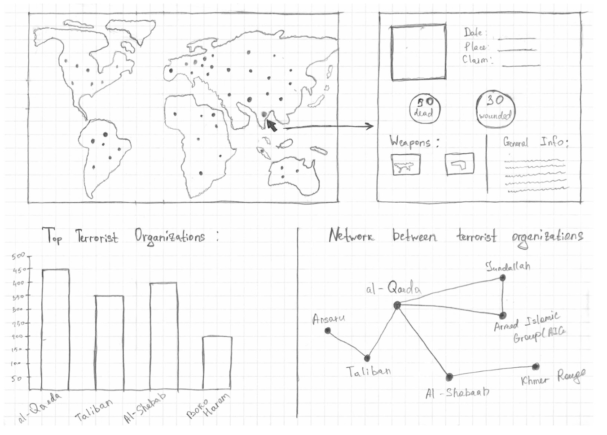

Background and Motivation
In the beginning of the project, we have chosen NBA datasets to work with. However, on Friday, March 15th, 2019, there was a devastating terror attack on two mosques in Christchurch, New Zealand, where 55 people were killed and 50 others were wounded. After being exposed to related videos and photos, we were very upset and devastated, and would like to work with global terrorism attack datasets to help provide a deeper insight into the different aspects of global terrorism in modern society, spanning from 1970 to 2017, especially since terrorism has unfortunately gained much more media attention as of late. As these events have been painfully recent, we believe that it is important to be aware of the circumstances surrounding terrorism and how it impacts the world on a global scale, while at the same time being careful to not promote biases and to remain rational in regards to these events.
Source: https://www.cnn.com/2019/03/15/asia/new-zealand-christchurch-attack-what-we-know-intl/index.html
Project Objectives
- Where did terrorist attacks happen most frequently within this time frame? This would give an overview on how severe the terrorist problem is in certain areas.
- How frequent do terrorist attacks happen in a certain region? This would also show severity of the problem.
- How many people were involved? Perpetrators? Victims? This would show the magnitude of each attack and how widespread the damage was in context to the local population.
- Who or what was targeted in these attacks? Who carried out these attacks? This question would give a broader general overview on who was involved.
Data
We found the dataset we need on Kaggle. It contains information on more than 180.000 terrorist attacks that have occurred between 1970 and 2017. It’s an comprehensive dataset that contains more than 135 columns. We believe this dataset provides great flexibility in terms of visualizing time series, and geospatial dimensions of terrorist attacks.
Data Processing
We expect to do a decent amount of data cleanup to keep the columns we need, and aggregate necessary data to extract information we need. There is also formatting to consider, depending on the type of chart being used. Therefore, we plan to deal with data cleanup in Python and use pandas, matplotlib.
Visualization Design
Must-Have Features:
- Some representation of geospatial location, AKA some form of map perspective to show locations where attacks took place.
- A select feature that would show more specific information to each attack.
- Data filtering to isolate and show specific types of attacks or different facets of information more clearly.
Optional Features:
- Additional tooltips to show more detailed information without having to specifically select something
- Additional legends to help clarify what is being displayed
- Perhaps a zooming feature on the map that can zoom in and show greater specifics for each city or village.
- Other features that may be readily available and feasible should additional related d3-libraries be found.
Sketches
Sketch #1: World Map with supplementary graphs
Sketch #2: World Map with timeline, filter and legend

Sketch #3: Topographic map idea

Sketch #4: Additional Bubble Chart for “Top Terrorist Organizations”

Sketch #5: Possible map scaling based design

Final Design

Project Schedule
Project Timeline from March 18th to April 29th:
| Week # | Todo List | Due Dates |
|---|---|---|
| Week 1 3/18 - 3/23 |
|
Project proposal (due Mar 18) Milestone I - a functional project prototype (due Apr 1) Milestone II - a fully functional prototype (due Apr 15) In-class user studies (Apr 18) Final project presentation (Apr 25) Final project submission & peer evaluations (due Apr 29) |
| Week 2 3/24 - 3/20 |
|
|
| Week 3 3/31 - 4/6 |
COMPLETE MILESTONE I | |
| Week 4 4/7 - 4/13 |
|
|
| Week 5 4/14 - 4/20 |
|
|
| Week 6 4/21 - 4/27 |
|
|
| Due Date Week 4/28 - 4/29 |
HAND IN FINAL PROJECT |
Generally, we plan to split the programming 3 ways:
- Isabelle: Data wrangling
- Saulet: Design
- Zhikai: Implementation
However, there will most likely be overlapping coding responsibilities as one leads into the other, and since the implementation itself may be quite labor intensive. We also plan to split the additional non-programming work evenly.